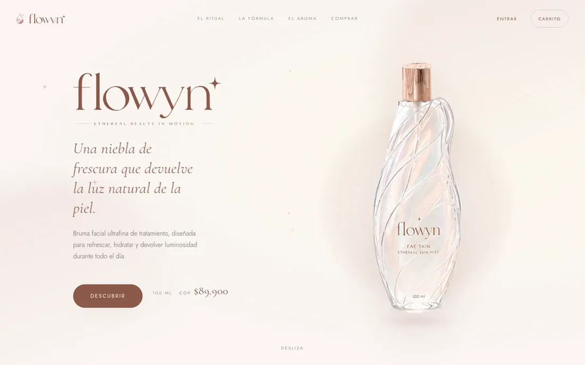

01En línea
flowyn · FAE SKIN
Tienda completa de un producto: catálogo, cuenta, carrito sincronizado entre dispositivos y cierre de pedido, con el precio recalculado siempre en el servidor.
La decisión
La clienta no puede crear pedidos, y esa es la parte importante del esquema. Un pedido nace en una función de servidor que recalcula el total desde el catálogo; si el navegador pudiera escribir en esa tabla, cualquiera con la consola abierta se registraría un frasco por mil pesos.
La pasarela de pagos la descarté a mitad: simular un cobro me parecía peor que no tenerlo. Prefiero un no honesto a un sí simulado.
- Vite
- JavaScript
- Supabase
- PostgreSQL · RLS
- WCAG AA
